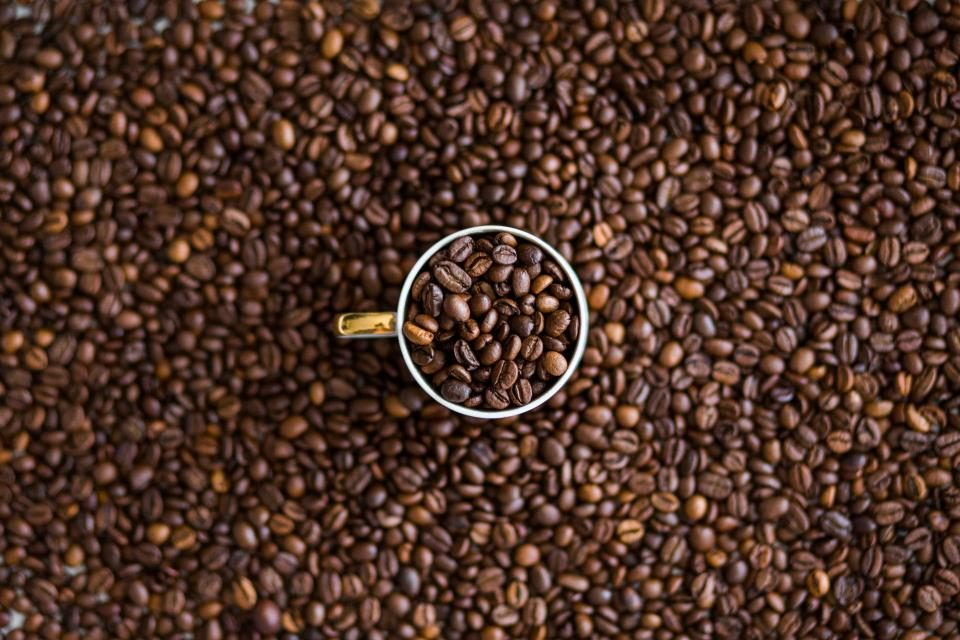
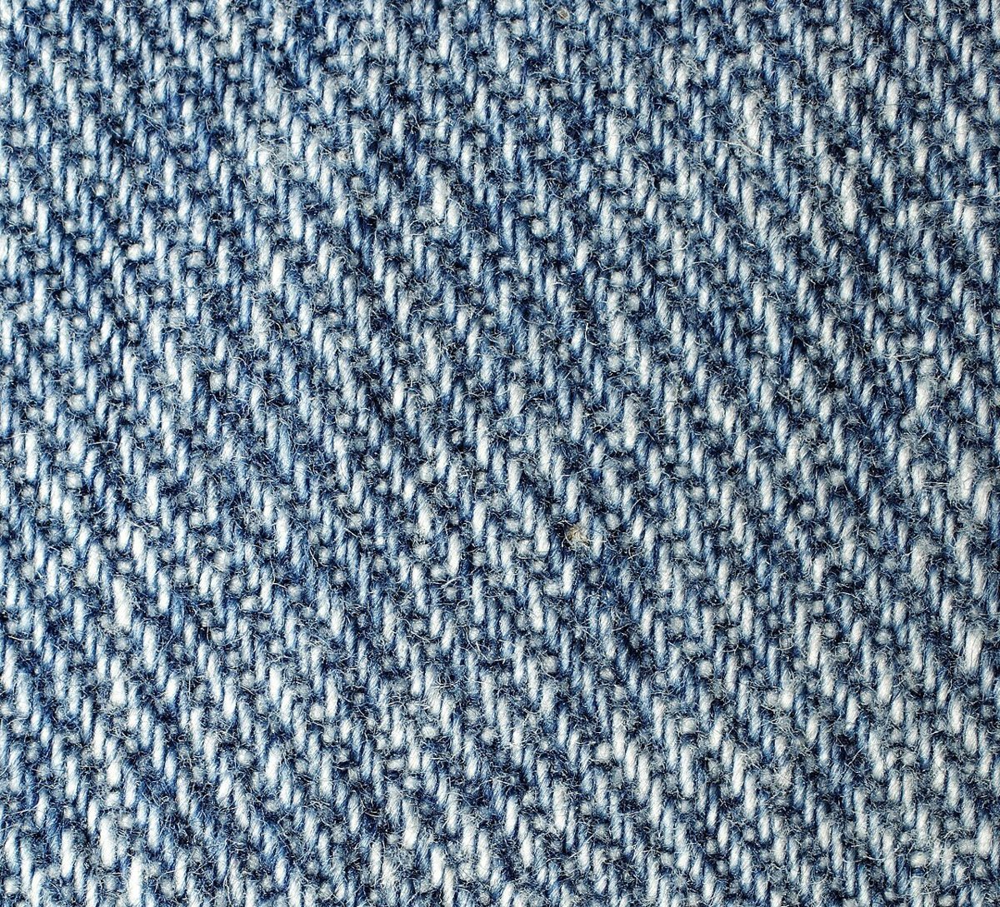
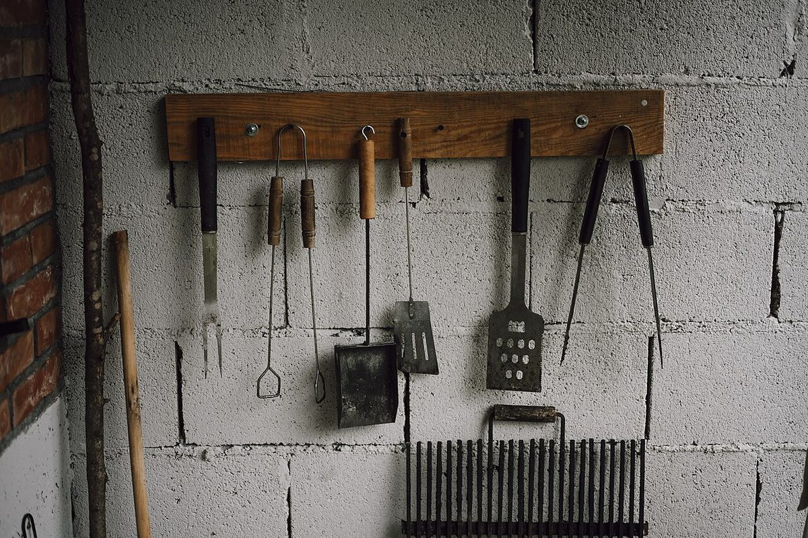

コーヒー焙煎店 / 静岡県掛川市日坂９１０
シシリ
コーヒーロースターズ
シシリコーヒー ロースターズのご案内ページです。営業時間やメニューなど、詳しいことは準備中。いまは所在地とInstagramだけが確認できています。

制作側の連想
三本爪のクレーンから考えたこと
これは制作側の連想で、お店の理念・由来とは無関係です。屋号の響きと「焙煎店」という業種から、制作側が思いついたのは、ゲームセンターのクレーンの三本爪でした。店名の由来は分かりません。このサイトは、ガラスケースの中の景品を爪でつかむ、という見立てで作っています。
いまつかめている三つ
爪は三本、確かなことも三つ。
- 1
所在地
〒436-0003
静岡県掛川市日坂９１０ - 2
Instagram
@shishi_ricoffee
連絡はこちらから - 3
それ以外
営業時間・メニュー・価格などは
準備中
景品棚(イメージ)
棚に並べた、豆と道具の写真
写真はお店のものではありません。国外または撮影地不明のフリー素材で、棚に並べる景品に見立てた飾りです。



ご案内
お店のこと(確認できたものだけ)
| 所在地 | 〒436-0003 静岡県掛川市日坂９１０ |
|---|---|
| 営業時間 | 準備中 |
| 定休日 | 準備中 |
| ご予約 | 準備中 |
| 駐車場 | 準備中 |
| SNS | Instagram @shishi_ricoffee |